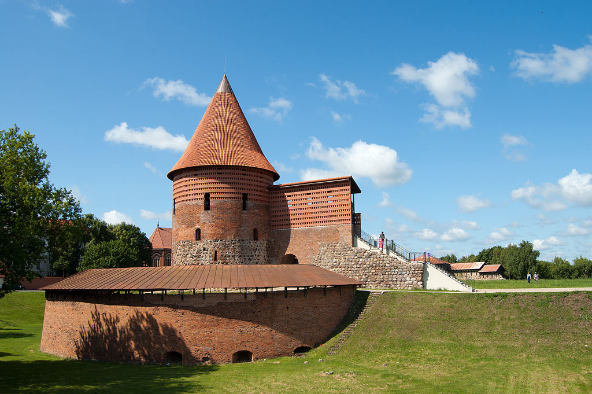
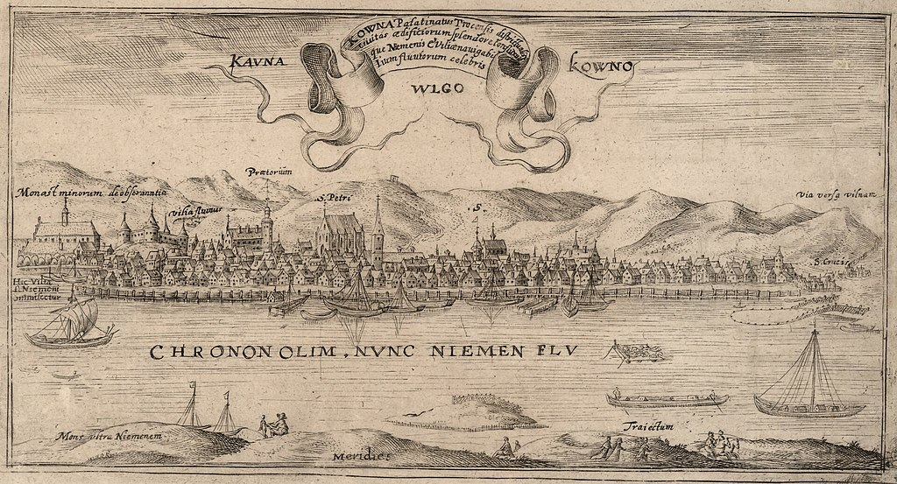
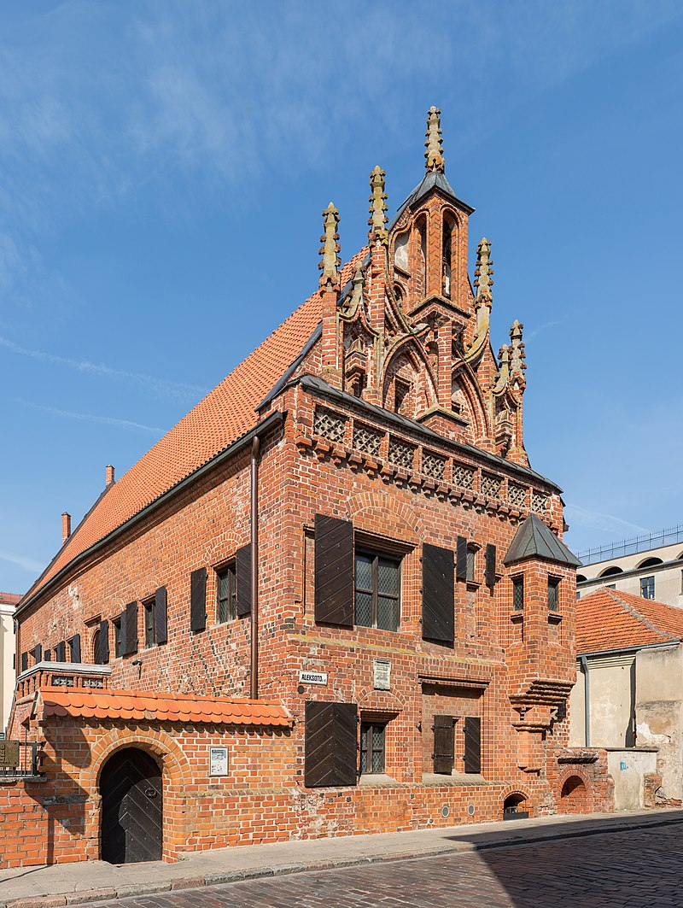

Archeological excavations testify to the fact that people
started settling at the confluence of the Nemunas and the
Neris rivers as far back as the 7th-6th millenium BC; the most
numerous collections of ceramics and other artefacts are from
the 2nd-1st millenium BC. During that period people settled in
the territory of the present day Kaunas: Eiguliai, Lampėdžiai,
Linkuva, Kaniūkai, Marvelė, Pajiesys, Romainiai, Petrašiūnai,
Sargėnai, Veršvai, the confluence area, Žaliakalnis.
Kaunas was first mentioned in annals in 1361, when the German Order
was getting ready for an attack on Kaunas Castle. The history of
Kaunas as a city, however, started in 1408, when Grand Duke Vytautas
granted its citizens the privilege of self-government based on
Magdeburg Law. Thus the community of free and economically-independent
merchants and craftsmen was legalised, responsible directly to the
ruler. Vytautas ceded Kaunas the right to own the scales, wax
processing, and woolen cloth trimming facilities. The scales were used
for weighing the goods brought to the city or packed on site, the wax
manufactury checked the quality of wax and prepared it for export by
moulding it into fixed-size pieces, while the wool trimming workshop
was meant for finishing fabrics. Those were profitable, monopolistic
enterprises.
The legal and economic independence of Kaunas was further strengthened
by privileges granted by Vytautas in 1415 and Žygimantas Kęstutaitis
in 1432. The privilege by Kazimieras in 1440 permitted the city to
have an annual 8-day fair starting on Virgin Mary Assumption Day
(August 15). It was one of the first permissions to organise fairs in
Lithuanian cities. Among other regulations, Kazimieras' privilege in
1449 banned retail trade by guest merchants. This ban was strengthened
by Aleksandras' privilege in 1492, which was of special significance
for the city economy: the ruler ordained that guest merchants had no
right to sell their goods in Lithuanian towns and settlements which
did not have Magdeburg rights. Guest merchants could trade only in
Kaunas and only with Kaunas citizens; the latter being granted the
right of middlemen; thus city guests were not allowed to trade among
themselves, only via Kaunas citizens. The previously introduced
stowage (sankrovos) right was ratified, according to which visiting
merchants had to stay in Kaunas for at least three days and sell their
goods to the local citizens before moving to other self-governing
cities of the Great Duchy of Lithuania or abroad. For a long time, the
customs-house was situated in Kaunas. In 1441–1532 an office of the
Hanseatic league was open in Kaunas, however, the Hanseatic activities
were substantially hindered by the local merchants. In addition to
trade, crafts were also developing rapidly: the first four
craft-workshops were set up in the second half of the 16th century,
the number growing to twelve in the late 17th century, while at the
end of the 18th century there were 10 workshops in the city. The total
number of the workshops functioning in the 16-18th centuries was 23,
representing 36 crafts, such as shavers, skippers, weavers, tailors,
armourers, glaziers, etc.
The power of the self-governing Kaunas was shared by three
interrelated major institutions: vaitas (the Mayor), the Council or
Magistrate (12 lay judges and 4 burgomasters) and the Benchers' Court
(12 persons). The city‘s authorities operated in the Town Hall, the
construction of which started in 1542. It is worth mentioning that the
heraldic seal of Kaunas, introduced in the early 15th century during
the reign of Grand Duke Vytautas, is the oldest city heraldic seal
known in the territory of the Grand Duchy of Lithuania; it is the
widely accepted symbol of Auroch. Folowing the medieval European
standards, Kaunas stressed its prosperity by building the city wall,
the construction of which started in the early 17th
century. Unfortunately, due to later wars and economic crises it was
not finished. Besides, with the fast progress of military technologies
and tactics in the 17th century, the city wall lost it defensive
value. The erection of the wall, however, made the city life safer, at
least for some time, since it put an end to the attacks by various
plunderers.

The Kaunas community embraced not only citizens, but also noblemen and
clergy. Like in other cities, they formed separate adminstration
units, the so called jurisdika, independent from the city
rights. Kaunas Castle was an important state institution since it was
the residence of the elder seniūnas who was appointed by the head of
the local nobility an administered Kaunas region (pavietas). After the
reforms by the second Statute of Lithuania, self-government of
nobility regions pavietai was introduced: noblemen would form their
own governing bodies - seimeliai, elect their representatives to the
Parliament (Seimas) and write instructions for them. Therefore Kaunas
was a venue of numerous seimeliai or Castle Courts (for criminal
cases)and Land Courts (for civil cases) residing there. Even though
there were no big conflicts between citizens and nobility, the
noblemen harmed the city by having obtained the right since the second
half of the 16th century to produce goods for export and to export
grain without customs.
The Catholic church played an a significant role in the city life. One
of the first churches in Kaunas was Blessed Virgin Mary's Assumption
Church (also called Vytautas the Great Church), funded by Grand Duke
Vytautas around the year 1400 and passed on to Franciscans. The
Parochial St. Peter and Paul's Church was built early in the 15th
century, first mentioned in 1413. The Parochial Church was mainly
supported by the citizens, while other churches would frequently get
support from noblemen. On the verge of the 15th and 16th centuries,
the city was beautified by St. Michael's Church (donated to Kaunas
Parochial Church by Grand Duke Aleksandras in 1503, and passed on to
the Benedictine Convent established by Kaunas Marshal (maršalka)
A.Skorulskis in 1621), St. Gertrude's Church (donated to the Parochial
Church by the Duke in 1503, handed over to the Rochite monks in 1750),
as well as St. George the Martyr's Church and the adjacent Bernardine
Monastery. A great number of monasteries and convents were established
the 17th century under the influence of the Catholic Reform during the
Baroque period. In addition to the above mentioned Benedictine
convent, the Bernardine convent with the Holy Trinity Church was
re-established by Kaunas region (pavietas) Marshal A.Masalskis, after
an unsuccessful start at the beginning of the 17th century. In 1639,
Vilnius bishop Abraomas Vaina permitted Jesuits to move to Kaunas, and
they settled in the buildings donated by the three brothers
Kojalavičiai: Albertas, Kazimieras and Petras, while the first mass
took place in Thunder House (Perkūno namai) purchased by the
Order. The year 1649 marks the start of the Jesuit school (later
college); but St. Francis Xavier Jesuit Church was built sometime
after the mid-17th century wars.The ensemble of the Heart of Christ
(St. Casimir, St. Dominic and Blessed Virgin Mary's Assumption) Church
and monastery was initiated around 1641. In 1667, the construction of
Holy Mary Visitation Church and the Camaldulian Monastery began,
funded by the Chancellor of the Grand Duchy of Lithuania Kristupas
Zigmantas Pacas. In 1707, the barefoot and reformed Carmelites arrived
in Kaunas and setled in St. Eliah and St. Gertrude's Church; in 1770,
they were given the Church of Holy Cross (or Discovery of Holy
Cross). The Parochial Church and the monasteries ran schools. The
Catholic churches and monasteries, together with laymen, set up
different religious fraternities.
In 1682–1683, Evangelists-Lutherans, who had only had a prayer house
before (the first Lutheran mass took place in 1577), built their own
church in Kaunas. Following Jonas Kazimieras' resolution in 1655,
Kaunas Lutherans were given one fourth of the city magistrate seats –
approximately corresponding to the proportion of Lutherans in
Kaunas. The majority of the local Lutherans were of German origin, and
had their own school and a nursing home.
In addition to Lithuanians, Germans and Poles, Jewish people started
settling in Kaunas in the second half of the 17th century. They were
not allowed to live in the city for a certain period in the 18th
century, so most of them stayed in the Vilijampolė settlement owned by
the Radvila family. There was also a small Tartar community there.
Kaunas experienced its greatest economic boom in the late 16th – early
17th century. During that period, a great number of buldings were
erected, many of them brick houses. A severe blow to the prosperity of
Kaunas resulted from the mid-17th century wars and occupation,
followed by the plague epidemic: many buildings were destroyed, trade
and crafts declined. The almost restored city was badly devastated by
the North War: in 1701-1707 the city was burned and destroyed; in 1708
it was desolated by famine and plague. In 1732, the recovering city
was ravaged again by a fire. More favourable conditions for trade and
crafts developed in the third quarter of the 18th century. In 1771,
the renovation of the Town Hall and the Parochial Church began. The
convalescing Kaunas, as one of the largest cities of the Grand Duchy
of Lithuania, gradually evolved in the period of the four-year
Seym. Unfortunately, after the collapse of the state in 1795, Kaunas
fell under the rule of tsarist Russia.
The new authorities gradually introduced their own order. In 1808 the
Magistrate was replaced by the Duma consisting of 6 persons, valid
until 1876. By that year the Duma, performing organisational
functions, had grown up to 72 members who also elected the so-called
City Council (the executive body consisting of the Head of the City
and the Council members). In 1812 Kaunas was drawn into the whirl of
the Russian-French war: on June 23, Napoleon I with his army of about
220,000 started crossing the Nemunas by pontoon bridges. The Emperor
stayed in Kaunas until June 27, with the Carmelite monastery as his
headquarters. On December 7 of the same year, Napoleon visited Kaunas
again: having lost the war in Russia, the Emperor was retreating to
France. His withdrawing army reached the city on December 12, and two
days later the Russian Cossacks took command, making Kaunas the site
of the French army's final catastrophy. The city itself suffered from
both armies.
1843 was the year of great significance in the 19th century city
history as Kaunas became the centre of the newly established Kaunas
gubernija (province). In the same year the first Kaunas newspaper,
Kovenskije gubernskije vedomosti, was published. Around that period
Kražiai gimnazija (gymnasium, advanced secondary school) was moved to
Kaunas and called Kaunas Boys‘ Gimnazija (the Jesuit College
functioned in Kaunas until the Jesuit Order was closed in 1773, then
it was reorganised into a secular school under the Education
Commission). From 1843 to 1869 the city territory doubled. Around the
year 1847 the formation of the so-called Nikolaievski prospect, a
boulvard-type street (present Laisvės alėja) started. In 1860 the
street was stone-paved. The development of Kaunas was significantly
enhanced by the railway line St Petersburg-Warsaw built in
1861-1862. The urban image started changing in the second half of the
19th century: new buildings were springing up in the new part of the
city – the future administrative and commercial centre. Under the
Tsarist Government Decree in 1864, the Žemaičiai (Telšiai) Bishopric
Centre was moved from Varniai to Kaunas.

In 1866 the first concerts and literary programmes were
held by music and literature fans; Kaunas had its Music
Society. In 1870 Kaunas Readers' Society was set up, which
established the first public library. However, more
prominent cultural life activities were hindered by the
Russian policies aimed at suppressing any national
movement. In 1879 Kaunas was granted the status of a 1st
class military fortress of the Russian Empire
frontier. From 1882 to the First World War Kaunas got
surrounded by a ring of star-shaped fortifications,
fortresses, and batteries (in 1895, the Kaunas Garrison
Orthodox Church for Russian soldiers, Soboras, was
consecrated). In 1892, under a contract with Swiss
engineer E.O. Dupont, a horse tramway konkė was
introduced, running from Town Hall square to the Railway
Station. The number of cultural institutions was
growing. In 1892, the City Theatre with 500 seats was
built, and in 1898, the Kaunas City Museum was opened in
the City Hall. After tsarist Russia lifted the ban on
Lithuanian press, early in the 20th century Kaunas had a
Lithuanian (J.Naujalis) bookshop, S.Banaitis Printing
House, St. Juozapas and St. Zita Lithuanian societies, and
the first Lithuanian Saulės Teachers' Gymnasium. During
World War I, Kaunas was occupied by Germans in 1915-1918
(despite the great efforts and expenses, Kaunas Fortress
managed to resist for only 11 days). After the war,
Vilnius was taken by Bolsheviks, and later by Poles, so
Kaunas was a provisional capital of Lithuania from early
January, 1919 to October, 1939. The Constituent Assembly
Seimas started its work here on May 15, 1920, all State
institutions, embassies and consulates were operating
here, too. Having become the political, cultural, and
economic centre of the country, Kaunas revived and gained
some modern European features.This is how Kaunas is
described by Dr. Margeris-Šeštokas in his book
„Amerikiečio įspūdžiai Lietuvoje“

“When you come to Kaunas, you feel like you are in a big city (…) Not
only different types of people, rush, intrigues, scandals, sensations,
hotels, restaurants, pubs, churches, the drama theatre, the opera
house, cinema theatres, museums, large schools with a university,
government offices, public squares, parks, some wide streets, numerous
policemen, but also the air itself seems to be telling that this city
is living the actual life of a metropolis.
All through the 1920s, modernization of Kaunas was strongly encouraged
and supported by the city's Mayor (burmistras) Jonas Vileišis (holding
office in 1921-1931). His work was continued by successors Antanas
Gravrogkas (1932-1933) and Antanas Merkys (1933–1939). The city looked
prettier thanks to new buildings and renovation of old ones, asphalted
streets (some of which had not even been cobbled before), and modern
bridges (Aleksotas and Vilijampolė bridges, built in 1929 and 1930,
respectively). According to 1928 data, some 13% of Lithuania's trade
and 15% of its industrial enterprises were concentrated in Kaunas. In
1929, water and wastewater systems started operating in Kaunas. During
the same year the horse-tramway konkė and was replaced by regular city
bus lines. In 1931, the Žaliakalnis funicular began to function,
followed by the Aleksotas funicular in 1935. The city's cultural life
flourished. In 1920, the Opera house opened in Kaunas, and in 1921,
the Military Museum was established (named after Vytautas the Great in
1930). In 1922, the State Theatre was opened and the Lithuanian
University was established, named after Vytautas Magnus in 1930. In
1924, the first Song Festival of Lithuania took place. In 1925 the
M. K. Čiurlionis Gallery was built. In 1938 the first National Olympic
Games were held in Kaunas, while in 1939 the European basketball
championship took place in Kaunas, and a Sports Hall with 5,000 seats
was erected for the event.
Sadly, the welfare of Kaunas, as well as the whole state, was soon
brutally shattered. The last meeting of the Ministers‘ Cabinet, which
accepted the ultimatum of the USSR government, took place at the
President's office on the night of June 14-15, 1940. On June 15, 1940,
the Soviet Union occupied Lithuania. In a year's time, on June 22, the
war between the Soviet Union and Germany broke out, and the following
day an uprising was organised by the Lithuanian Activist Front (LAF),
which soon spread across Lithuania. The activists, having taken the
Kaunas radio station, declared restoration of independence and
formation of a provisional government. Germans entered Kaunas on June
25, and on June 28 they ordered the Lithuanian troops to stand down
and forced the Provisional Government to dissolve on August 5. In July
1941, 2977 Jews were shot in the 7th fort of the Kaunas Fortress. On
August 15th, the ghetto district was established, and 9,200 prisoners
from the ghetto were exterminated in the 9th fort in October. In
November, another 5,000 Jews brought from different German cities were
killed there. In 1943, the Kaunas ghetto was reorganised into an SS
concentration camp. While withdrawing from Kaunas on July 8-13, 1944,
the German troops liquidated the ghetto: five to six thousand Jews
were moved to German concentration camps, about one thousand perished
outright, and only some 300 ghetto prisoners managed to escape. The
headquarters and publishing houses of the anti-Nazi, later anti-Soviet
organisations, such as the Chief Committee of Lithuania‘s Liberation,
Lithuanian Front, Union of Fighters for Lithuania‘s Freedom, and
Lithuanian Freedom Army, were located in Kaunas.
On August 1, 1944, Kaunas was re-taken by the Soviet Army, beginning
the second Soviet occupation. Kaunas became the major centre of
resistance. From the very start of the Lithuanian guerrilla war, the
most important guerrilla districts - Tauro, Prisikėlimo, Didžiosios
Kovos – were based around Kaunas. In July 1945, the Declaration of the
Lithuanian Nation was proclaimed in Kaunas, and the Address to the
United Nations and the Whole Civilized World was published, reminding
the world of the resolutions of the Atlantic Charter. Important
underground publications were being disseminated in the city,
conspiratory lodgings were set up, false documents were being issued,
printing equipment storage was organised. On All Souls' Day in 1955,
the first public anti-Soviet rally took place in Kaunas: citizens
burned candles in the military cemetery and sang national songs,
resulting clashes with the militia. On May 14, 1972, a
nineteen-year-old Romas Kalanta, having exclaimed „Freedom for
Lithuania!“, immolated himself in the garden of the Musical Theatre
(in front of the then city Executive Committee building). The event
led to new forms of resistance: total passive resistance all around
Lithuania. On November 1, 1987, a non-sanctioned rally took place at
Maironis tomb, where people gathered to mark Maironis' 125th birthday
anniversary. Priest Robertas Grigas and other speakers denounced
Soviet censorship and called for restoration of Lithuania's
statehood. On June 10, 1988, the initiating group of the Kaunas
grassroot movement Sąjūdis was formed; they published the newspaper
Kauno aidas (Kaunas Echo). On October 9, 1988, the tricolour flag was
raised above the tower of the Military Museum named after Vytautas the
Great. On February 16, 1989, the Freedom Monument was re-unveiled, and
a year later, rebuilding the Monument to those who Perished for
Lithuania‘s Freedom was completed.
On September 1, 1989, Vytautas Magnus University was
re-established. Kaunas became the city of students in the revived
Lithuania: during the academic year, the student population is
approximately 60,000. In 1991, an international jazz festival, Kaunas
Jazz, was initiated.
In 1993, Pope John Paul II visited Kaunas and held Holy mass at the
confluence of the two rivers. Since 1996, the internationally-known
Pažaislis Classical Music Festival has been held during the three
summer months. Since 1997 The biennial of contemporary art “Kauno
bienalė” is held every two years. Kaunas basketball team, Žalgiris,
won the European Cup in 1998, as well as the titles of the Euroleague
champions in 1999. Since 1999, Kaunas City Day is celebrated on May
20.
In 2000 The 2nd Lithuanian Eucharistic Congress – the main event in
Lithuania celebrating the Anniversary of Christianity – was held in
Kaunas. In 2002 The festival “Operetta in Kaunas Castle” was started,
in 2004 – annual photo festival “Kaunas Photo”. In 2011 The final of
the EuroBasket Championship took place in the new “Žalgiris
arena”. Academic and business sectors combine in “Santaka” Valley:
from 2014 The Newest Pharmacy and Health Technology Center, KTU
Science and Technology Centre and Technological Business Incubator are
operating here. Architectural heritage of Kaunas is recognized
internationally – in 2015 The European Commission awarded the interwar
modernist architecture of Kaunas by the European Heritage
Label. Kaunas remains the important transport and logistics center in
Lithuania: in 2015 the European railway track “Rail Baltica” reached
the city. In 2017 Kaunas was granted the status of the European
Capital of Culture 2022, it is an incentive to develop the cultural
and artistic peculiarities of Kaunas and present them to the world.